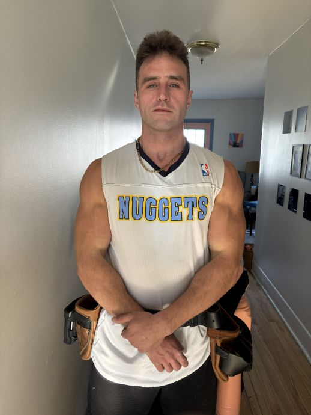

Sports pipelines, crew loyalty, and why the environment keeps pulling people back.

Part 2 covers the culture side: sports, masculinity, trades tolerance, and why the same environment that gives you work keeps pulling you back.
Read Part 1 in the meantime →